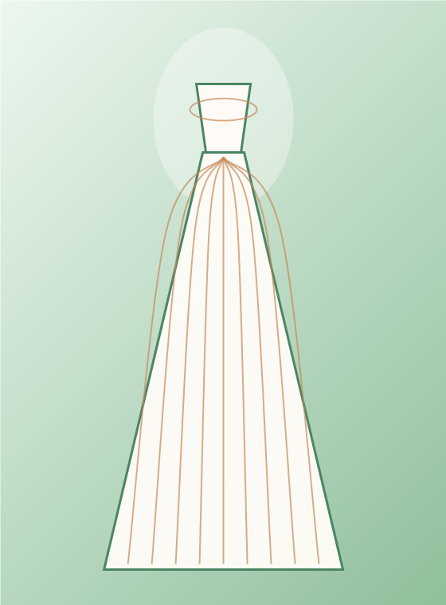
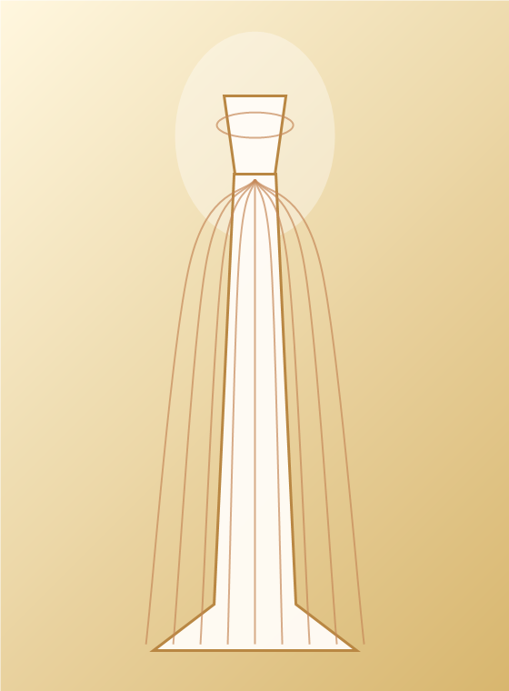
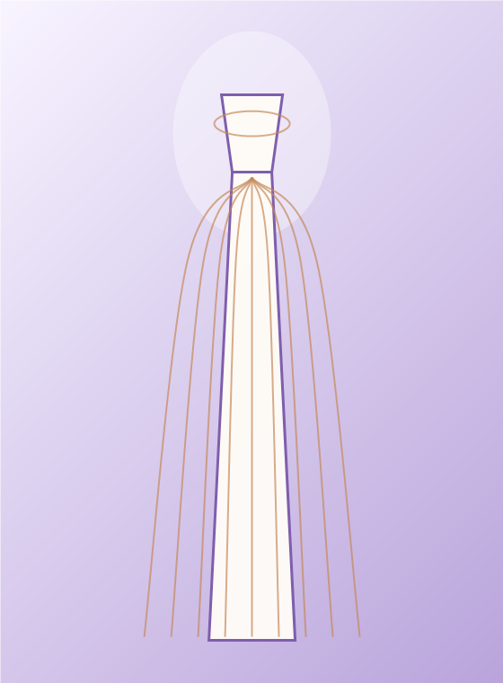
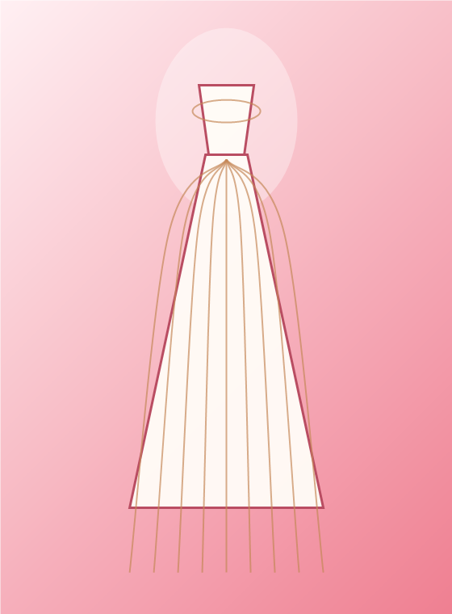

Garden Romance
Botanical lace, loose waves, peach bouquet, and a soft veil for afternoon vows.
Browse styling stories by venue, mood, and budget. Each look is designed to feel romantic, approachable, and easy to imagine on your own wedding day.

Botanical lace, loose waves, peach bouquet, and a soft veil for afternoon vows.

Pearl details, sculpted fit, brushed gold accessories, and a low evening glow.

Clean satin, short veil, ivory heels, and a tiny bouquet for a modern city wedding.

Tea-length skirt, red lip, joyful shoes, and a second-look feeling from the first minute.
A detachable overskirt, lace sleeves, veil change, statement earrings, or satin gloves can transform your ceremony look into an after-party look without buying a second gown.
Romance for the ceremony, freedom for dancing.
Big aisle drama without committing to full volume all night.
Cathedral for vows, bow veil for portraits.
Gold, pearl, blush, and champagne details soften the whole look.